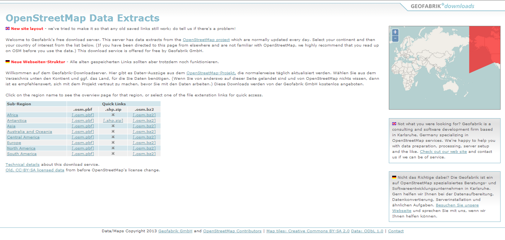

Module 8: Getting OSM Data¶
Learning Objectives
Download OpenStreetMap data from the Geofabrik website
Download customised OpenStreetMap data using HOT Exports
Now that we have learned how to contribute data to the OpenStreetMap database, let’s see how we can access data for download in different formats. You may want to download OSM data as a backup or for use in Geographic Information System software such as QGIS.
1. Getting OSM data on Geofabrik website¶
The easiest way to get OSM data is to download a pre-processed data extract from one of the various websites which offers up-to-date downloads. In this section we will see how to download data from Geofabrik, a company which offers free OSM downloads at the link below:
http://download.geofabrik.de/openstreetmap/
The data is divided into several regions. To access the data for Indonesia, click on the Asia region in the table.
Then click on Indonesia.
To obtain the Indonesian data in shapefile (.shp) format, click on indonesia-latest.shp.zip and the file will be downloaded. Several file formats are available - shapefiles are a popular GIS format which contain several different files with point, line and polygon data.
The website indicates the most recent time that the data was updated. Note that the server usually updates the data once every 24 hours, so if you have just made changes to OSM, don’t expect them to appear in this data immediately.
2. Getting OSM data from HOT Exports¶
To download a specific area with a specific data attributes that you define, HOT Exports is a more convenient tool for downloading data.
In your web browser, go to http://export.hotosm.org
To create a data processing job you must have an account. Click Create Account in the bottom left corner and enter your email address, a new password and password confirmation. Complete the registration by clicking Create Account. Open your email and click on the link that has been sent in order to activate your account.
Log in using the account that you have created.
When you are successfully logged in, click New Job in the upper right corner.
Enter a name for the job (such as the name of the area you are downloading). Enter a description as well.
Zoom in on the map to the area that you want to download. Click Select Area and draw a box around the area that you want. The box can be manipulated by dragging its corners and centre. When you finish, click Create Job.
Next, you may optionally select a presets file to include in your data extract. Presets files are the same as those used in JOSM, and instruct HOT Exports to extract specific data attributes in your custom download. This is useful if the data you are accessing contains non-standard tags that are not typically included in data extracts.
To add a presets file, click the drop-down menu next to Select Preset File and choose one of the available options. Check the box next to Add Default Tags? to include the default attributes in the data extract.
Click Save and the server will begin to process your request. The length of the process depends on the area you choose and server capacity.
When the process is complete, the data can be downloaded in a variety of formats, including shapefiles, KML and database formats.
All jobs you create will appear in the list on the Jobs page. If any time you want to download the same area with up-to-date data, find the job on this page. Click Start new run to process the same extract again but with the most recent OSM data.